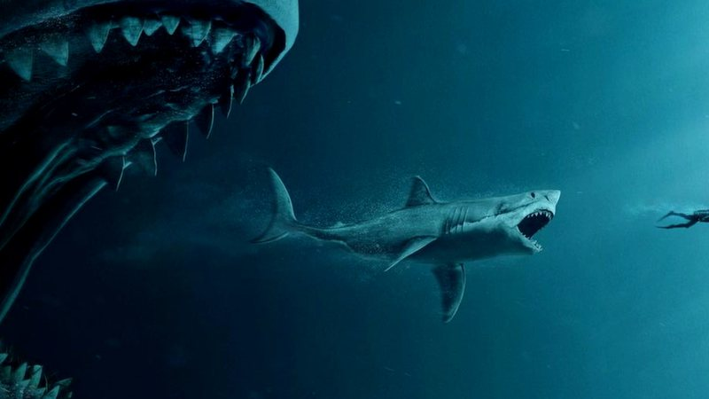

Megalodonte, que significa "dente grande", é uma espécie extinta de tubarão que viveu há aproximadamente 23 a 3,6 milhões de anos, durante o Mioceno Inferior ao Plioceno. Antigamente se pensava ser um membro da família Lamnidae e um parente próximo do tubarão-branco.
Entre os detalhes dele seria;
- O animal precisa comer até 900 kg por dia
- Pesava entre 50 até 75 toneladas
- Sua mordida podia esmagar um automóvel
Era da família do Tubarão-branco?

A Ocean Conservancy, explica: ‘A maioria das representações modernas pintam o megalodonte como se fosse um grande tubarão branco superdimensionado, e muito disso se deve ao fato de que os cientistas pensaram por algum tempo que o grande tubarão branco e o megalodonte compartilhavam um ancestral comum.’